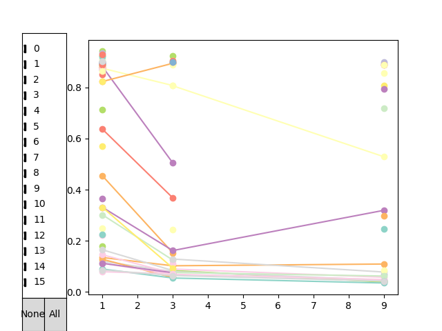
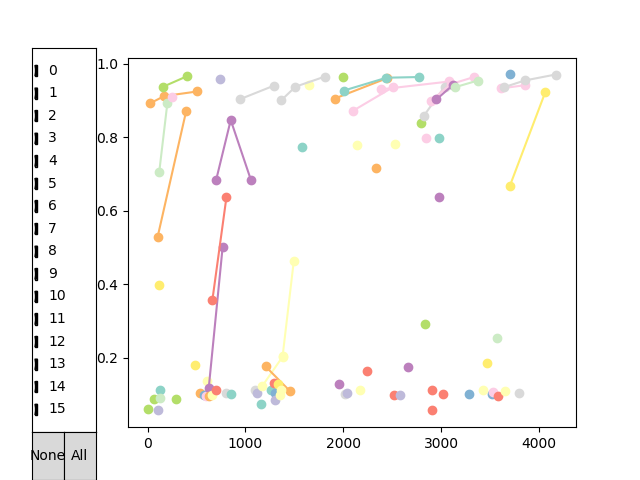

Note
Click here to download the full example code
Example 7 - Interactive Exploration of the Results¶
This example takes a run from example 5 and allows you to interactively look at all runs performed and the associated loss. The plot allows you to only include certain iterations (selected by the checkboxes on the left). By hovering over the learning curves (all runs of a single configuration on all respective budets) you see some information about the configuration and its performance. Clicking on it will make the tool tip persistent.Clicking on the curve again, will remove it again.
This tool is not very mature, but maybe it can help you to explore the structure hidden in your results. Please refer to the documentation of the visualization submodule to see all options.
- 
- 
import matplotlib.pyplot as plt
import hpbandster.core.result as hpres
import hpbandster.visualization as hpvis
# load the example run from the log files
result = hpres.logged_results_to_HBS_result('example_5_run/')
# get all executed runs
all_runs = result.get_all_runs()
# get the 'dict' that translates config ids to the actual configurations
id2conf = result.get_id2config_mapping()
lcs = result.get_learning_curves()
hpvis.interactive_HBS_plot(lcs, tool_tip_strings=hpvis.default_tool_tips(result, lcs))
def realtime_learning_curves(runs):
"""
example how to extract a different kind of learning curve.
The x values are now the time the runs finished, not the budget anymore.
We no longer plot the validation loss on the y axis, but now the test accuracy.
This is just to show how to get different information into the interactive plot.
"""
sr = sorted(runs, key=lambda r: r.budget)
lc = list(filter(lambda t: not t[1] is None, [(r.time_stamps['finished'], r.info['test accuracy']) for r in sr]))
return([lc,])
lcs = result.get_learning_curves(lc_extractor=realtime_learning_curves)
hpvis.interactive_HBS_plot(lcs, tool_tip_strings=hpvis.default_tool_tips(result, lcs))
Total running time of the script: ( 0 minutes 0.251 seconds)